BOOMERANG / ANDROID UI · 03
纸墨之间，事事有序。
个人空间、回顾备份、AI 助手和版本更新沿用宣纸朱砂风格。以下为隔离 Android 模拟器实际渲染；大字号和更新状态使用明确标注的合成数据。
查看核心界面实拍 · 查看设计稿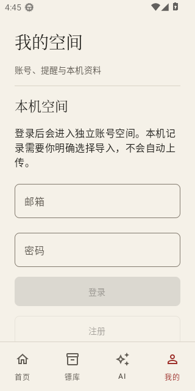
我的空间 · 宣纸
实际应用 · 账号表单与整页滚动
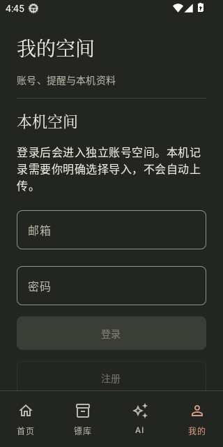
我的空间 · 夜墨
实际应用 · 系统夜间模式
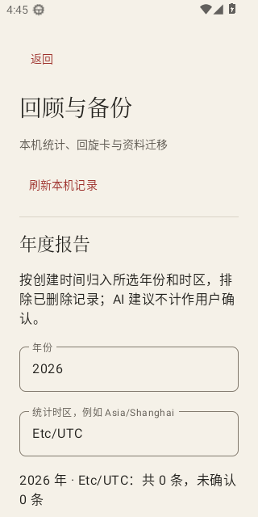
回顾与备份 · 宣纸
实际应用 · 年度统计与分节
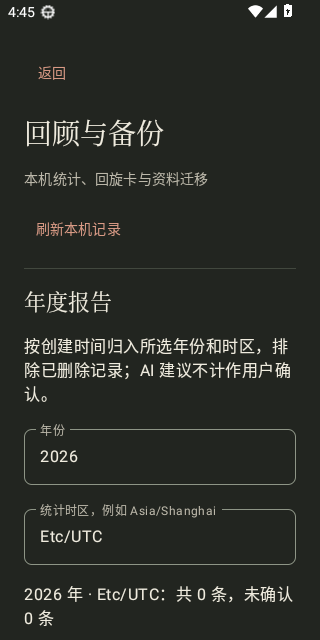
回顾与备份 · 夜墨
实际应用 · 系统夜间模式
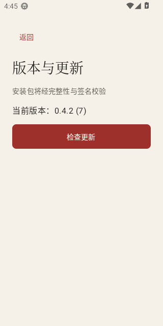
版本与更新 · 宣纸
实际应用 · 当前版本与检查入口
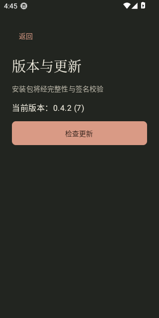
版本与更新 · 夜墨
实际应用 · 系统夜间模式
查看 AI 边界、更新状态及大字号检查
独立组件截图仅证明展示状态与操作可达性，不代表供应商、正式 OTA 或用户手机验收。
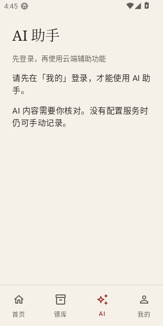
AI 助手 · 未登录
实际应用 · 登录边界；尚未验证真实百炼调用
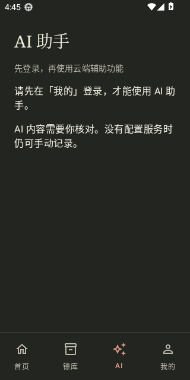
AI 助手 · 夜墨
实际应用 · 未登录提示
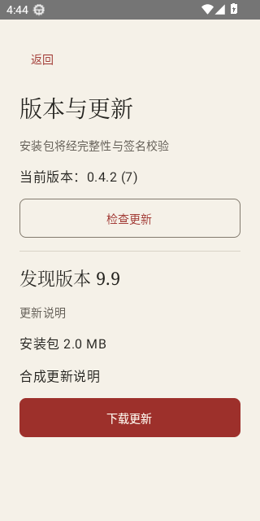
可用更新 · 宣纸
合成更新状态，仅用于验证布局与操作
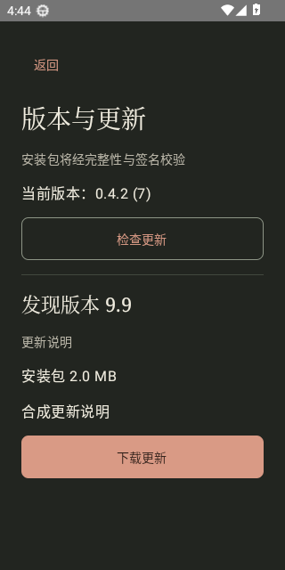
可用更新 · 夜墨
独立组件容器；系统栏以实际应用截图为准
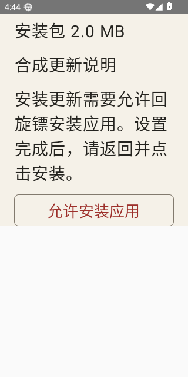
安装权限 · 大字号
合成状态 · 200% 字号 / 360dp 短视口 / 滚动后
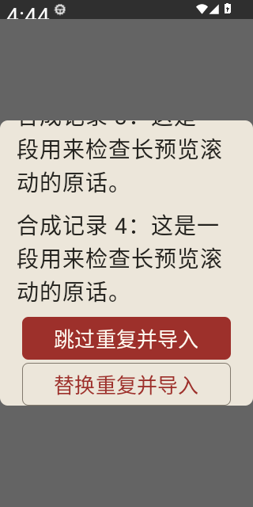
备份预览 · 大字号
合成记录 · 200% 字号 / 360dp 弹窗 / 滚动后
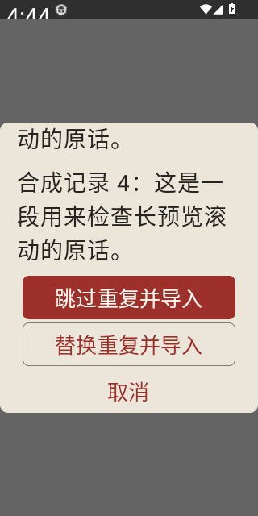
备份取消 · 大字号
实际系统 200% 字号 · 360dp 弹窗 · 三种操作均可滚动到达
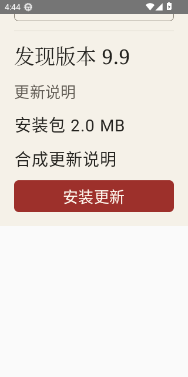
安装更新 · 大字号
合成状态 · 200% 字号 / 360dp 视口 / 滚动后